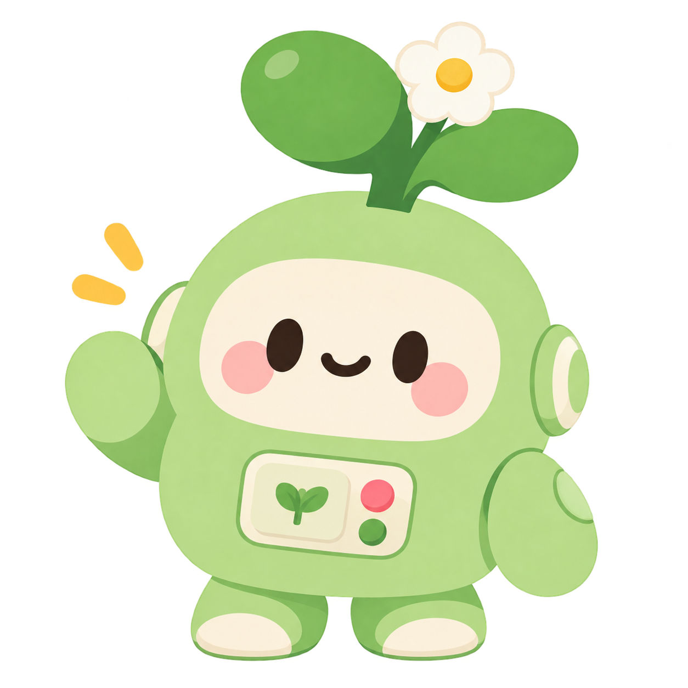
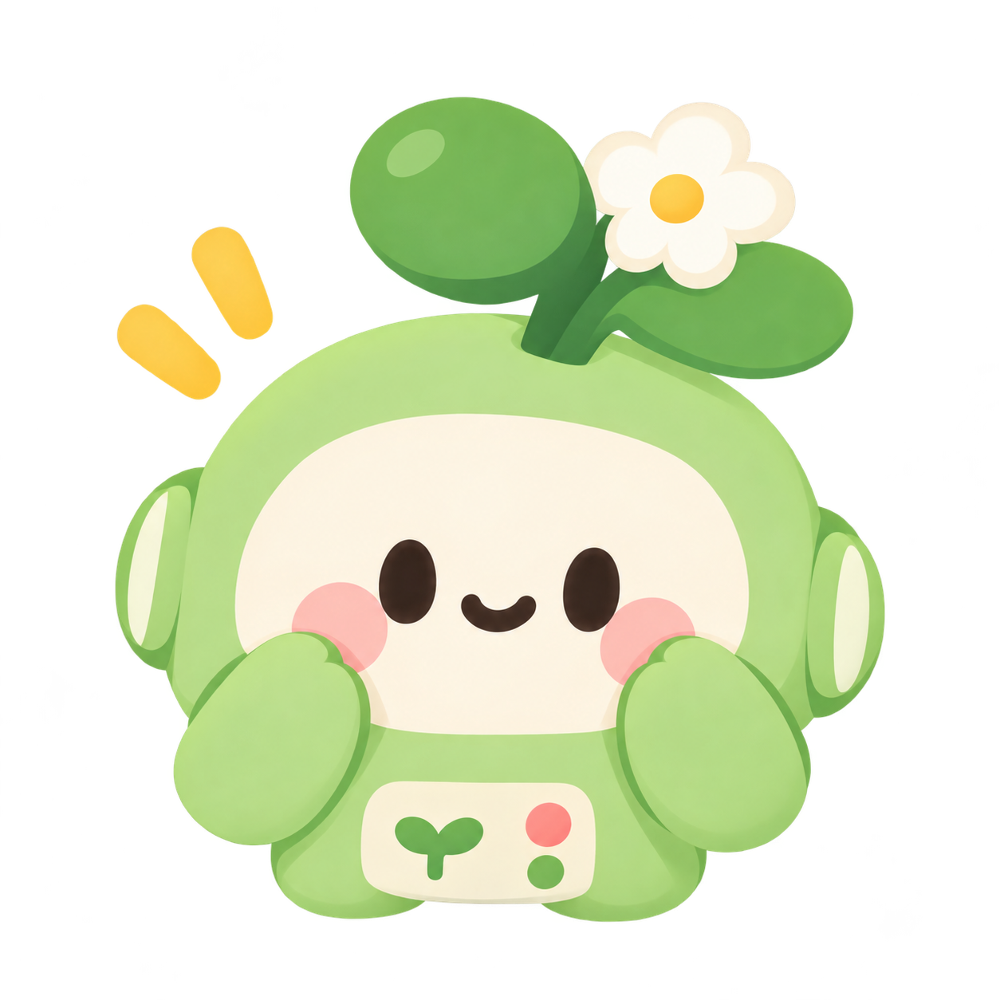
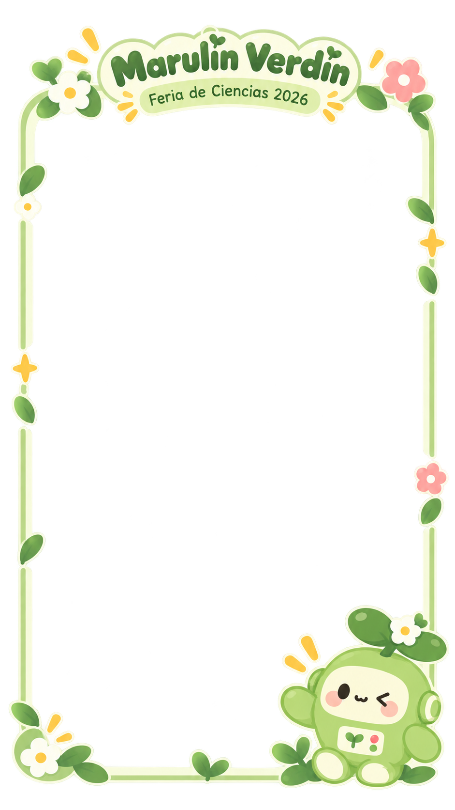

¿Sos experto en plantas?
Preguntas de biología vegetal para poner a prueba lo que sabés.

🌱 Tu bot de confianza para descubrir el maravilloso mundo de las plantas 🌱
Feria de Ciencias 2026
Empezar @naturales26.sfaSaludalo y escuchá lo que tiene para contarte 🌱

🔊 Subí el volumen del celular para escuchar a Marulín.
Elegí un juego. Son 10 preguntas y cada respuesta correcta vale 10 puntos. ¡Intentá llegar a 100! 🌱
Preguntas de biología vegetal para poner a prueba lo que sabés.
Cuidado, algunas afirmaciones tienen un poquito de trampa.
Analizá situaciones reales y elegí qué harías.
Girá la flor y descubrí si te toca un reto, una adivinanza o el premio sorpresa.
Respondé 7 preguntas y descubrí qué versión de Marulín te representa más.
No la pienses tanto. Elegí la respuesta que más te represente.
Elegí con quién querés sacarte la foto, activá la cámara y guardá tu recuerdo de la Feria de Ciencias 2026.
Activá la cámara para empezar

Elegí un marco y tocá “Activar cámara”.
Nosotros somos Mía Font, Tomás Molina, Sol Brigante y Fabriccio Vietta, y fuimos quienes creamos todo este proyecto.
La verdad es que crear este bot, el experimento, la página web y todo lo que forma parte de Marulín Verdín requirió muchísimo esfuerzo, tanto emocional como económico. Aun así, después de todo el trabajo que hicimos, estamos súper felices con el resultado.
Marulín Verdín es muy importante para nosotros porque representa nuestro proyecto para la última Feria de Ciencias de nuestra etapa escolar. Por eso tiene una carga emocional bastante grande. Aunque, siendo sinceros, también estamos un poquito felices de que sea la última.
Crear el código utilizando Arduino IDE y un ESP32-WROOM, para poder medir el nivel de humedad de la tierra y comunicarnos con la planta mediante un bot, fue una de las partes más difíciles. Ninguno de nosotros tenía experiencia previa en programación, así que prácticamente todo lo que necesitamos para construir este proyecto lo fuimos aprendiendo durante el proceso.
El programa fue desarrollado en Arduino IDE y cargado en un ESP32-WROOM. El ESP32 recibe los datos de un sensor de humedad colocado en la tierra de la planta.
El sensor genera un valor diferente dependiendo de qué tan húmeda o seca se encuentre la tierra. A partir de esos valores realizamos una calibración para convertir la lectura del sensor en un porcentaje de humedad aproximado, desde 0 % para una tierra muy seca hasta 100 % para una tierra húmeda.
El programa también conecta el ESP32 a una red Wi-Fi y permite comunicarse con un bot de Telegram. De esta forma podemos solicitar el nivel de humedad de la planta y recibir una respuesta de Marulín indicando si necesita agua, si su humedad es adecuada o si ya recibió suficiente riego.